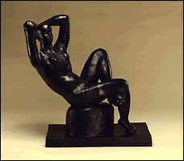

|
Sculpture | |
|
(c) |
Henri Matisse |
|
View Renaissance bronzes, 18th-century marble and
terracotta pieces, 19th-century French works, and
20th-century works by such celebrated artists as Henri
Matisse and Pablo Picasso. Sculpture is included in many
permanent galleries and in some special exhibitions. | |